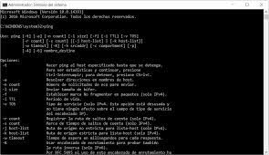

El simbolo de sistema (CMD) posee una gran cantidad de comandos que nos permiten vizualizar la informacion del dispositivo. Los que veremos a continuacion son los comandos y sus opciones son los mas utilizados a la hora de realizar conecciones entre computadoras

Tipos de Comandos
Los tipos de Comandos utilizados en Redes son:
IPCONFIG
El comando ipconfig muestra los valores de configuración de red de TCP/IP actuales y actualiza la configuración del protocolo DHCP y el sistema de nombres de dominio. También existen herramientas con interfaz gráfica denominadas winipcfg y wntipcfg.
Sus Opciones Son:
ipconfig /all: este comando enumera información de IP para cada adaptador de red en tu
sistema. A diferencia del comando simple ipconfig, este comando muestra información
adicional, como si DHCP está habilitado, la dirección IP de los servidores DHCP, su
dirección IPv6 local y cuándo se obtuvo su concesión DHCP, y cuándo caducará, entre otras cosas. También puede usar este comando para encontrar la dirección física, es decir, la
dirección MAC para tu sistema.
ipconfig /release: este comando le permite dejar/renunciar tu dirección IP actual. Cuando
ejecuta este comando, la dirección IP de tu sistema, sea lo que sea, se libera para que otros
dispositivos en la red puedan usarla.
ipconfig /renew: este comando generalmente se ejecuta justo después del comando ipconfig
/release. Una vez que el comando ipconfig /release ha "abandonado" una dirección IP, tu
sistema necesitará una nueva. Este comando permite que tu sistema obtenga una nueva
dirección IP. Esta opción, junto con la anterior, es lo que necesita ejecutar para resolver el
error de “conflicto de dirección IP” que puede darse a veces.
ipconfig /showclassid: Esto le permite ver las ID de clase DHCP. Estas ID de clase
normalmente están configuradas para aplicaciones particulares en una red. Como usuario
promedio, no le preocuparán en absoluto.
ipconfig /setclassid: esta opción de comando se usa con la opción previa ipconfig
/showclassid para establecer la ID de clase DHCP.
ipconfig /displaydns: esta opción le permite visualizar el caché de DNS. El caché DNS es
un registro de sitios web públicos que ha visitado. Es una copia local del sitio web y tu
dirección IP pública. Básicamente, cuando escribes www.google.com en tu navegador, tu
caché de DNS ya sabe dónde encontrar este sitio web porque tu dirección IP está guardada
en el caché.
ipconfig /flushdns: el DNS no es omnipotente. Es propenso a guardar información
incorrecta que a su vez le impide acceder a sitios web. Este comando le permite descargar,
es decir, borrar el caché de DNS en Windows y crear uno nuevo.
ipconfig /registerdns: esta opción te permite actualizar tus configuraciones de DNS. Si el
DNS no ha podido registrar un nombre o no se ha podido conectar a un servidor DHCP, este
comando puede resolver el problema volviendo a registrar el DNS.
PING
El comando PING es un método para determinar la latencia de comunicación entre dos redes. En pocas palabras, es un método para determinar la cantidad de tiempo que tardan los paquetes de datos en viajar entre dos dispositivos o a través de una red
Sus Opciones Son:
ping - t: Hace ping al host especificado hasta que se detiene. Para detener, pulse Control-C
ping -a: Resolver direcciones de nombres de host
ping -n: Número de solicitudes de eco para enviar.
ping -l: Enviar tamaño del búfer
ping -f: Establecer el indicador Don't Fragmet flag (no fragmentar) en el paquete (solo IPv4)
ping -i: Establecer el indicador Time To Live (tiempo de vida).
ping -v: Establecer el indicador Type of Service (tipo de servicio, pero ya no se usa)
ping -r: Registrar ruta para el recuento de saltos (solo IPv4)
ping -s: Marca de tiempo para el recuento de saltos (solo IPv4)
ping -j: Ruta de origen imprecisa a lo largo de la lista de hosts (solo IPv4)
ping -k: Ruta de origen estricta a lo largo de la lista de hosts (solo IPv4)
ping -w: Tiempo de espera en milisegundos para esperar cada respuesta
ping -R: Usar un encabezado de enrutamiento para probar también la ruta inversa (solo IPv6, en desuso según RFC 5095)
ping -S: Dirección de origen a usar
ping -c: Identificador del compartimento de enrutamiento
ping -p: Hacer ping a una dirección de proveedor de virtualización de red de Hyper-V
ping -4: Forzar el uso de IPv4
ping -6: Forzar el uso de IPv6
NETSTAT
El comando netstat genera visualizaciones que muestran el estado de la red y estadísticas de protocolo. El estado de los protocolos TCP, SCTP y los puntos finales de UDP puede visualizarse en formato de tabla. También puede visualizarse información sobre la tabla de enrutamiento e información de interfaces.
Sus Opciones Son:
netstat: Muestra la Lista estándar de todas las conexiones activas
netstat info: Accede al menú general de netstat
netstat -a: Enumeración de los sockets abiertos y las conexiones activas
netstat -b: Mostrar el archivo ejecutable que está involucrado en la creación de un puerto de escucha (listener) o una conexión (requiere derechos de administrador)
netstat -e: Estadística de Ethernet (bytes recibidos y enviados, paquetes de datos, etc.)
netstat -f: Mostrar el ((Fully Qualified Domain Name (FQDN)))
netstat -i: Mostrar el tiempo que ha pasado una conexión ((TCP))
netstat -n: Mostrar de forma numérica las direcciones y los números de puerto
netstat -o: Presentar las conexiones con el ID de proceso correspondiente
netstat -p <"protocolo">: Mostrar las conexiones para el protocolo especificado
netstat -q: Listar todas las conexiones: todos los sockets/puertos TCP en escucha y todos los puertos TCP abiertos que no están en escucha
netstat -r: Mostrar el contenido de la tabla “routing”
netstat -s: Acceso a las estadísticas de los protocolos de red más importantes; estándar: IP, IPv6, ((ICMP))
netstat -t: Mostrar el estado de la descarga (descarga TCP para aliviar el procesador principal) de las conexiones activas
netstat -x: Información sobre todas las conexiones, escuchas (listener) y puntos finales compartidos para NetworkDirect
netstat -y: Mostrar las plantillas de conexión TCP de todas las conexiones activas
netstat <"Intervalo">: Mostrar nuevamente las estadísticas correspondientes tras seleccionar un periodo de tiempo en segundos (ejemplo: 10 segundos); posibilidad de combinar según sea necesario (ejemplo: -p), [CTRL] + [C] termina la visualización del intervalo